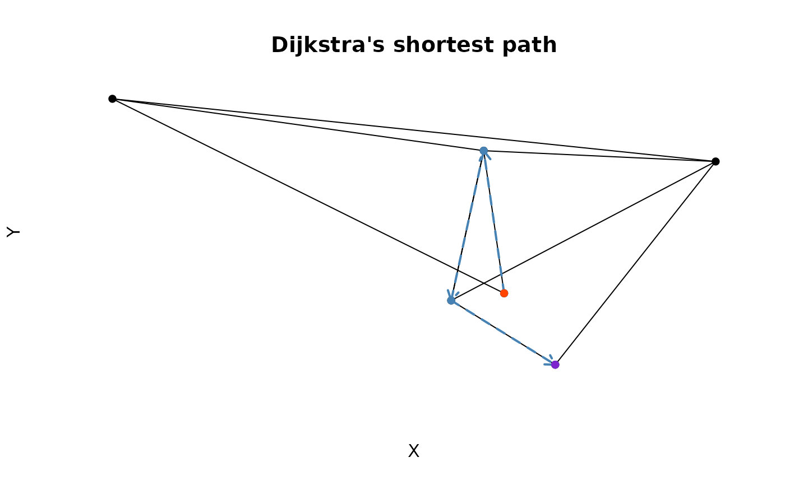

Calculate surface distances of graph or mesh using 'Dijkstra' method.
Usage
dijkstras_surface_distance(
positions,
faces,
start_node,
face_index_start = NA,
max_search_distance = NA,
...
)
surface_path(x, target_node)Arguments
- positions
numeric matrix with no
NAvalues. The number of row is the total count of nodes (vertices), and the number of columns represent the node dimension. Each row represents a node.- faces
integer matrix with each row containing indices of nodes. For graphs,
facesis a matrix with two columns defining the connecting edges; for '3D' mesh,facesis a three-column matrix defining the face index of mesh triangles.- start_node
integer, row index of
positionson where to start calculating the distances. This integer must be 1-indexed and cannot exceed the total number ofpositionsrows- face_index_start
integer, the start of the nodes in
faces; please specify this input explicitly if the first node is not contained infaces. Default isNA(determined by the minimal number infaces). The reason to set this input is because some programs use1to represent the first node, some start from0.- max_search_distance
numeric, maximum distance to iterate; default is
NA, that is to iterate and search the whole mesh- ...
reserved for backward compatibility
- x
distance calculation results returned by
dijkstras_surface_distancefunction- target_node
the target node number to reach (from the starting node);
target_nodeis always 1-indexed.
Value
dijkstras_surface_distance returns a list distance
table with the meta configurations. surface_path returns a data frame
of the node ID (from start_node to target_node) and cumulative
distance along the shortest path.
Examples
# ---- Toy example --------------------
# Position is 2D, total 6 points
positions <- matrix(runif(6 * 2), ncol = 2)
# edges defines connected nodes
edges <- matrix(ncol = 2, byrow = TRUE, data = c(
1,2,
2,3,
1,3,
2,4,
3,4,
2,5,
4,5,
2,5,
4,6,
5,6
))
# calculate distances
ret <- dijkstras_surface_distance(
start_node = 1,
positions = positions,
faces = edges,
face_index_start = 1
)
# get shortest path from the first node to the last
path <- surface_path(ret, target_node = 6)
# plot the results
from_node <- path$path[-nrow(path)]
to_node <- path$path[-1]
plot(positions, pch = 16, axes = FALSE,
xlab = "X", ylab = "Y", main = "Dijkstra's shortest path")
segments(
x0 = positions[edges[,1],1], y0 = positions[edges[,1],2],
x1 = positions[edges[,2],1], y1 = positions[edges[,2],2]
)
points(positions[path$path,], col = "steelblue", pch = 16)
arrows(
x0 = positions[from_node,1], y0 = positions[from_node,2],
x1 = positions[to_node,1], y1 = positions[to_node,2],
col = "steelblue", lwd = 2, length = 0.1, lty = 2
)
points(positions[1,,drop=FALSE], pch = 16, col = "orangered")
points(positions[6,,drop=FALSE], pch = 16, col = "purple3")

# ---- Example with mesh ------------------------------------
if (FALSE) { # \dontrun{
# Please install the down-stream package `threeBrain`
# and call library(threeBrain)
# the following code set up the files
read.fs.surface <- internal_rave_function(
"read.fs.surface", "threeBrain")
default_template_directory <- internal_rave_function(
"default_template_directory", "threeBrain")
surface_path <- file.path(default_template_directory(),
"N27", "surf", "lh.pial")
if(!file.exists(surface_path)) {
internal_rave_function(
"download_N27", "threeBrain")()
}
# Example starts from here --->
# Load the mesh
mesh <- read.fs.surface(surface_path)
# Calculate the path with maximum radius 100
ret <- dijkstras_surface_distance(
start_node = 1,
positions = mesh$vertices,
faces = mesh$faces,
max_search_distance = 100,
verbose = TRUE
)
# get shortest path from the first node to node 43144
path <- surface_path(ret, target_node = 43144)
# plot
from_nodes <- path$path[-nrow(path)]
to_nodes <- path$path[-1]
# calculate colors
pal <- colorRampPalette(
colors = c("red", "orange", "orange3", "purple3", "purple4")
)(1001)
col <- pal[ceiling(
path$distance / max(path$distance, na.rm = TRUE) * 1000
) + 1]
oldpar <- par(mfrow = c(2, 2), mar = c(0, 0, 0, 0))
for(xdim in c(1, 2, 3)) {
if( xdim < 3 ) {
ydim <- xdim + 1
} else {
ydim <- 3
xdim <- 1
}
plot(
mesh$vertices[, xdim], mesh$vertices[, ydim],
pch = ".", col = "#BEBEBE33", axes = FALSE,
xlab = "P - A", ylab = "S - I", asp = 1
)
segments(
x0 = mesh$vertices[from_nodes, xdim],
y0 = mesh$vertices[from_nodes, ydim],
x1 = mesh$vertices[to_nodes, xdim],
y1 = mesh$vertices[to_nodes, ydim],
col = col
)
}
# plot distance map
distances <- ret$paths$distance
col <- pal[ceiling(distances / max(distances, na.rm = TRUE) * 1000) + 1]
selection <- !is.na(distances)
plot(
mesh$vertices[, 2], mesh$vertices[, 3],
pch = ".", col = "#BEBEBE33", axes = FALSE,
xlab = "P - A", ylab = "S - I", asp = 1
)
points(
mesh$vertices[selection, c(2, 3)],
col = col[selection],
pch = "."
)
# reset graphic state
par(oldpar)
} # }